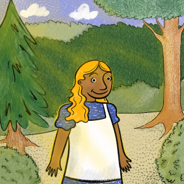
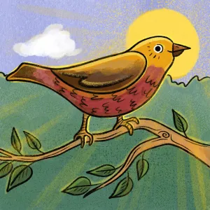
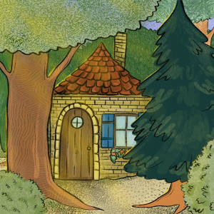
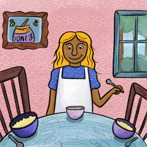
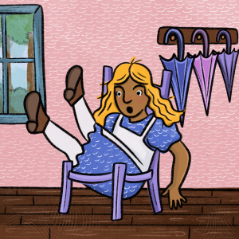
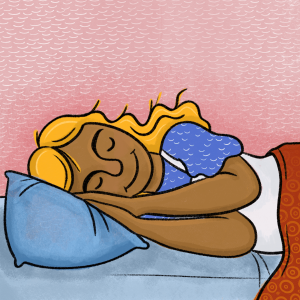
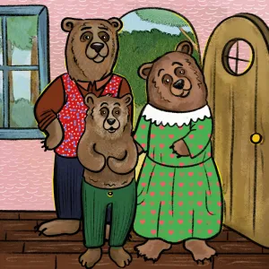
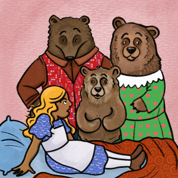

part 1
Once upon a time a girl named Goldilocks lived in a house at the edge of the woods. In those days curls of hair were called "locks." She was "Goldilocks" because golden hair ran down her head and shoulders.

part 2
One morning Goldilocks was out for a walk when she came across a beautiful bird. She followed that bird right into the woods, where her mother had said many times she must never go. But Goldilocks didn’t think of that.

part 3
Deeper and deeper into the woods she went. But where was the bird? It was nowhere to be seen. Goldilocks looked around. That's when she knew she was lost.
But a house was not far away. “I wonder who lives there,” she thought, "so deep into the woods."

part 4
She went up and knocked on the door. No answer. She knocked again. Still no answer. Goldilocks knocked a third time and the door opened. But no one was behind the door.
“Well, the door is already open,” said the girl. “So I may as well go in.”
Goldilocks smelled a wonderful smell, and soon knew why. On the table were three steaming bowls of oatmeal. All of a sudden she realized how very hungry she was.
What Goldilocks did not know, however, is that three bears lived in this house. In fact, that very morning the three bears had sat down to their bowls of oatmeal but the cereal was too hot. So they had decided to take a short walk. They said to each other, "By the time we return home our oatmeal will be perfect."
Gazing at the steaming bowls of oatmeal, Goldilocks thought, “I'm sure whoever lives here won’t mind if I take just one sip.” She sat at the first chair and took a sip. “Ah!” she said, “it is too hot.”

part 5
The girl saw a ladder and climbed it to an attic. In a row, three beds were lined up – one big bed, one medium-sized bed, and a wee little bed.
“I'm sure whoever lives here won’t mind if I lay down for just a short nap,” she said. She laid down on the big bed but it was too hard. She laid down on the medium-sized bed but it was too soft. The girl laid down on the wee little bed, and it was just right! As her head hit the pillow, Goldilocks was fast asleep.

part 6
Just then, the three bears came home from their walk.
“Not I,” said Papa Bear.
"Not I," said Little Bear.
Slowly the three bears stepped inside and looked around.
“Most odd!” said Papa Bear, seeing his spoon in his bowl. “Someone has been eating my oatmeal!”
“Most odd indeed!” said Mama Bear, also seeing her spoon in her bowl. “Someone has been eating my oatmeal!”
“This is the most odd of all!” said Little Bear. “Someone has been eating my oatmeal and they ate it all up!”

part 7
"This is the most odd of all!" said Little Bear.
The three bears were very surprised, as you can imagine. With care, they stepped into their living room.
“Do you think someone was sitting in my chair?” said Papa Bear.
“I know someone was sitting in my chair,” said Mama Bear, “because I can see the seat cushion is pushed down.”
“And I know someone was sitting in my chair!” said Little Bear. “Because it’s all broken!”
The three bears were even more surprised at that! They climbed the ladder to their attic.
“Someone has been sleeping on my bed,” said Papa Bear, who could see that his blankets were moved.

part 8
Goldilocks bolted awake. Three bears were looming over her, and they did not look happy.
“Oh my!” said Goldilocks, jumping out of bed. As quick as she could, she climbed down the ladder and ran out the front door.
Little Bear chased after her. "Wait, please!"
Goldilocks stopped and turned around.
"Tell me," said Little Bear, “Why did you come inside our house?”
Goldilocks stopped and turned around.
“I guess I didn’t think–,“ said Goldilocks.
“And why did you eat my oatmeal?” said Little Bear.
“Well I guess I didn’t think–,“ said Goldilocks.

part 9
“I’m sorry about the chair,” said Goldilocks. “I guess you saw it broke.”
"Yep," said Mama Bear with a frown.
“I’m good at fixing things,” said Goldilocks, “If you have glue.”
“Of course we have glue!” said Papa Bear. “What kind of bears do you think we are?”
“I will make it up to you!” said Goldilocks.
“Come on in then, dear,” said Mama Bear.
“We'll start over,” said Papa Bear with a nod.
“Come in, come in!” said Little Bear, jumping up and down.
With smiles, they skipped together inside the Bear’s house.